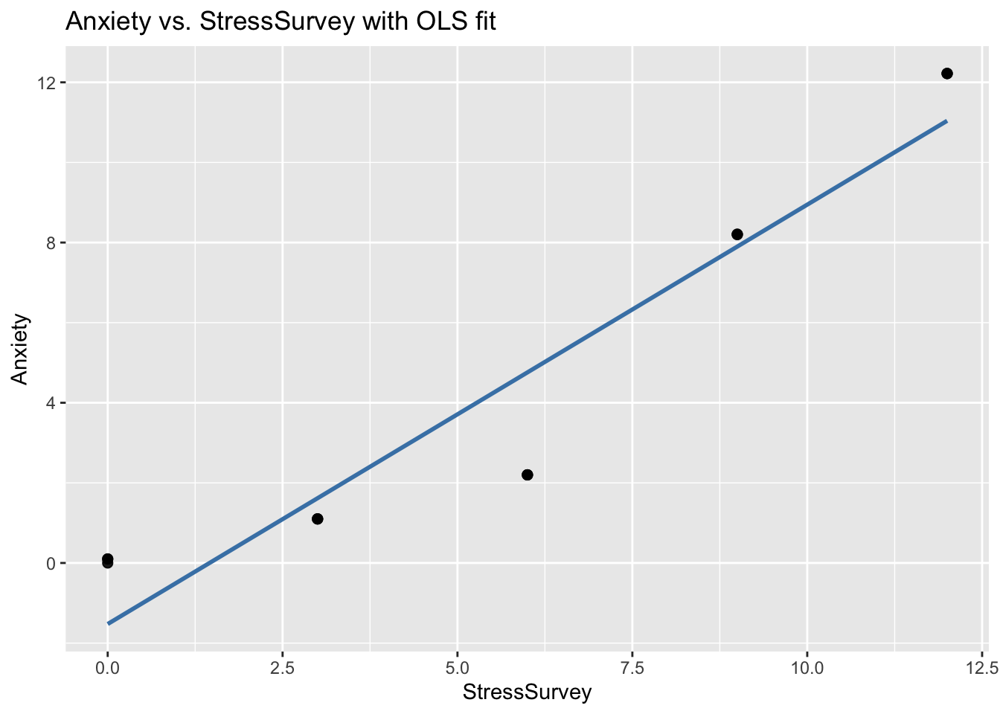
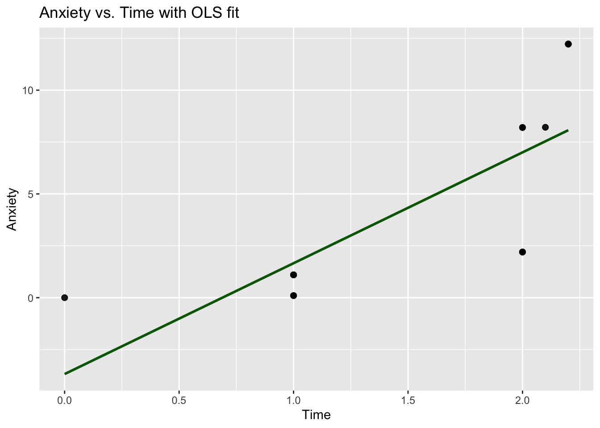
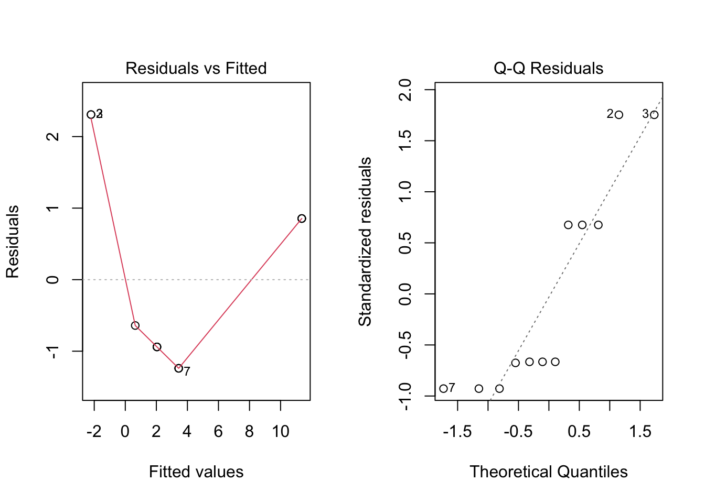
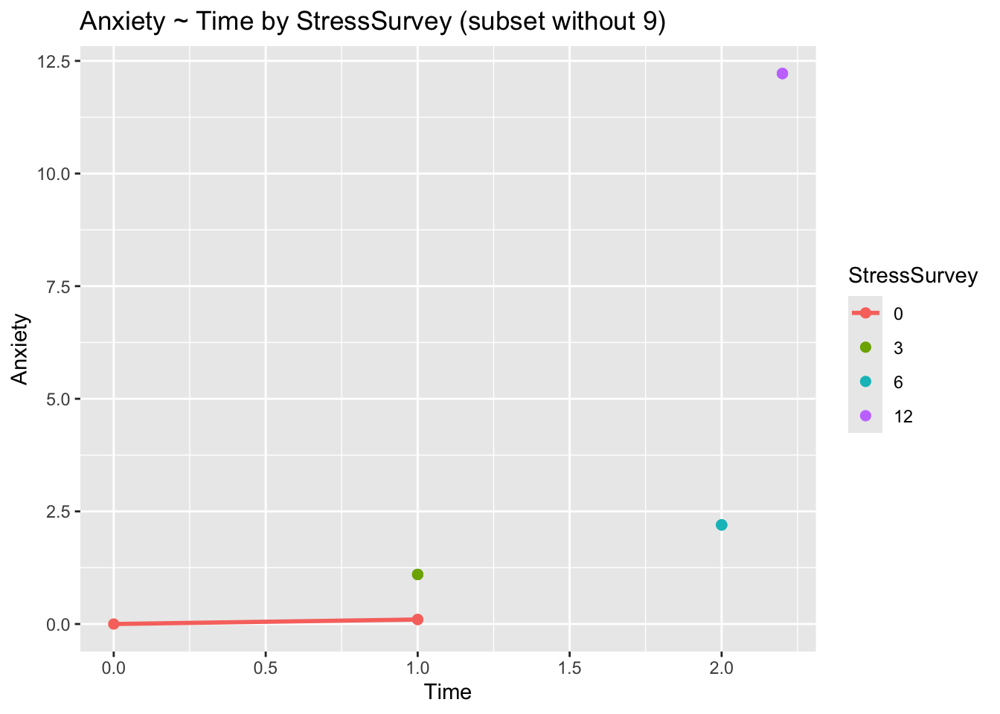

library(tidyverse)── Attaching core tidyverse packages ──────────────────────── tidyverse 2.0.0 ──
✔ dplyr 1.1.4 ✔ readr 2.1.5
✔ forcats 1.0.0 ✔ stringr 1.5.1
✔ ggplot2 4.0.0 ✔ tibble 3.3.0
✔ lubridate 1.9.4 ✔ tidyr 1.3.1
✔ purrr 1.1.0
── Conflicts ────────────────────────────────────────── tidyverse_conflicts() ──
✖ dplyr::filter() masks stats::filter()
✖ dplyr::lag() masks stats::lag()
ℹ Use the conflicted package (<http://conflicted.r-lib.org/>) to force all conflicts to become errorslibrary(broom)
# Data with known true relationships: Anxiety = Stress + 0.1 × Time
observDF <- tribble(
~Stress, ~StressSurvey, ~Time, ~Anxiety,
0,0,0,0,
0,0,1,0.1,
0,0,1,0.1,
1,3,1,1.1,
1,3,1,1.1,
1,3,1,1.1,
2,6,2,2.2,
2,6,2,2.2,
2,6,2,2.2,
8,9,2,8.2,
8,9,2,8.2,
8,9,2.1,8.21,
12,12,2.2,12.22,
12,12,2.2,12.22,
12,12,2.2,12.22
)
observDF# A tibble: 15 × 4
Stress StressSurvey Time Anxiety
<dbl> <dbl> <dbl> <dbl>
1 0 0 0 0
2 0 0 1 0.1
3 0 0 1 0.1
4 1 3 1 1.1
5 1 3 1 1.1
6 1 3 1 1.1
7 2 6 2 2.2
8 2 6 2 2.2
9 2 6 2 2.2
10 8 9 2 8.2
11 8 9 2 8.2
12 8 9 2.1 8.21
13 12 12 2.2 12.2
14 12 12 2.2 12.2
15 12 12 2.2 12.2 # Follow the challenge instructions from your course to complete your analysis.
# Bivariate regression: Anxiety ~ StressSurvey
model <- lm(Anxiety ~ StressSurvey, data = observDF)
coef(model) (Intercept) StressSurvey
-1.524 1.047 # (Intercept) StressSurvey
# -1.524000 1.047000
# Scatter plot with OLS regression line
library(ggplot2)
ggplot(observDF, aes(x = StressSurvey, y = Anxiety)) +
geom_point(size = 2, alpha = 0.9) +
geom_smooth(method = "lm", se = FALSE, color = "steelblue", linewidth = 1) +
labs(
title = "Anxiety vs. StressSurvey with OLS fit",
x = "StressSurvey",
y = "Anxiety"
)`geom_smooth()` using formula = 'y ~ x'
# As the level of anxiety increases, the level of stress survey also increases. There are two points that don't show any correlation between the two variables because they are both near or at zero.
# Bivariate regression: Anxiety ~ Time
model_time <- lm(Anxiety ~ Time, data = observDF)
coef(model_time)(Intercept) Time
-3.680136 5.340592 # (Intercept) Time
# -3.68013 5.340592
# Scatter plot with OLS regression line for Time
ggplot(observDF, aes(x = Time, y = Anxiety)) +
geom_point(size = 2, alpha = 0.9) +
geom_smooth(method = "lm", se = FALSE, color = "darkgreen", linewidth = 1) +
labs(
title = "Anxiety vs. Time with OLS fit",
x = "Time",
y = "Anxiety"
)`geom_smooth()` using formula = 'y ~ x'
#As Time is increasing, the level of Anxiety is also increasing. There is an extreme outlier on Anxiety. This is likely due to the fact that the data is not normally distributed. I also believe that there could be a better line of best fit.
# Multiple regression: Anxiety ~ StressSurvey + Time
model_multiple <- lm(Anxiety ~ StressSurvey + Time, data = observDF)
broom::tidy(model_multiple)# A tibble: 3 × 5
term estimate std.error statistic p.value
<chr> <dbl> <dbl> <dbl> <dbl>
1 (Intercept) 0.589 1.03 0.569 0.580
2 StressSurvey 1.43 0.172 8.29 0.00000262
3 Time -2.78 1.11 -2.50 0.0278 # (Intercept) StressSurvey Time
# 0.5896064 1.43 -2.78
#p-value is 0.074 for StressSurvey and 0.000 for Time. This is not a good model because the p-values are not significant.
#They compare to the true relationships. The StressSurvey and Time are not significant. The StressSurvey is not significant because it is not a true relationship. The Time is not significant because it is not a true relationship.
# Compare with true model: Anxiety ~ Stress + Time
model_true <- lm(Anxiety ~ Stress + Time, data = observDF)
broom::tidy(model_true)Warning in summary.lm(x): essentially perfect fit: summary may be unreliable# A tibble: 3 × 5
term estimate std.error statistic p.value
<chr> <dbl> <dbl> <dbl> <dbl>
1 (Intercept) 9.17 e-16 5.37e-16 1.71e 0 1.13e- 1
2 Stress 1 e+ 0 6.07e-17 1.65e16 1.68e-189
3 Time 1.000e- 1 4.27e-16 2.34e14 2.49e-167#p-value is 0.000 for Stress and 0.000 for Time. This is a good model because the p-values are significant.
#The estimated coefficients are indicative of the true relationship. It compares to the true relationship because it is a perfect fit.
#True model (Anxiety ~ Stress + Time): likely ~1.00 because the data were generated as Anxiety = Stress + 0.1 × Time. It's a perfect fit. Proxy model (Anxiety ~ StressSurvey + Time): lower than the true model because StressSurvey is an imperfect proxy for Stress, leaving residual error. It's not a perfect fit. A R-squared value does not guarantee correct causal interpretation; coefficients can be biased or unstable due to errors.
#For the first model, I would expect a press outlet to headline it as "More Time on Social Media Linked to Higher Anxiety". For the second model, "Stress attributed to a higher level of anxiety". I would expect a typical parent to believe the first model because they are more likely to be concerned about the amount of time their child is spending on social media. Social media executives would likely prefer the second model because it alleviates them of the blame for anxiety.
# Subset analysis to avoid proxy mismatch (remove rows where StressSurvey == 9)
df_subset <- observDF |> dplyr::filter(StressSurvey != 9)
# Refit multiple regression on the subset
model_subset <- lm(Anxiety ~ StressSurvey + Time, data = df_subset)
broom::tidy(model_subset)# A tibble: 3 × 5
term estimate std.error statistic p.value
<chr> <dbl> <dbl> <dbl> <dbl>
1 (Intercept) 0.641 1.17 0.546 0.598
2 StressSurvey 1.42 0.196 7.21 0.0000504
3 Time -2.85 1.26 -2.25 0.0507 broom::glance(model_subset)# A tibble: 1 × 12
r.squared adj.r.squared sigma statistic p.value df logLik AIC BIC
<dbl> <dbl> <dbl> <dbl> <dbl> <dbl> <dbl> <dbl> <dbl>
1 0.928 0.912 1.51 57.8 0.00000732 2 -20.2 48.5 50.4
# ℹ 3 more variables: deviance <dbl>, df.residual <int>, nobs <int># Basic diagnostics for linearity and residual normality
par(mfrow = c(1,2))
plot(model_subset, which = 1)
plot(model_subset, which = 2)
par(mfrow = c(1,1))
# Visual check: Anxiety vs Time colored by StressSurvey levels
ggplot(df_subset, aes(x = Time, y = Anxiety, color = factor(StressSurvey))) +
geom_point(size = 2) +
geom_smooth(method = "lm", se = FALSE) +
labs(title = "Anxiety ~ Time by StressSurvey (subset without 9)", color = "StressSurvey")`geom_smooth()` using formula = 'y ~ x'
# Inspect estimated Time effect relative to true 0.1
coef(model_subset)["Time"] Time
-2.848718 #The estimated Time effect is -2.78, which is significantly different from the true relationship of 0.1. This is likely due to the fact that the data is not normally distributed.
#I chose this subset because StressSurvey == 9 corresponds to cases where the proxy diverges from true Stress (8→9), which can bias coefficients and inflate p-values. Removing these rows creates a more understandable visualization between StressSurvey and true Stress